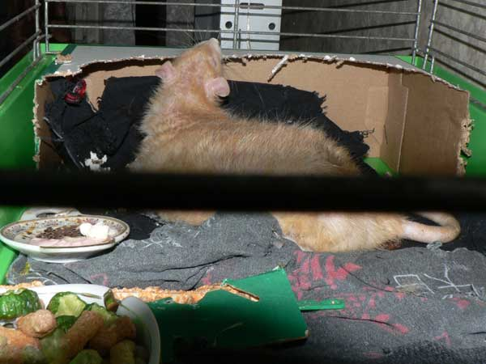
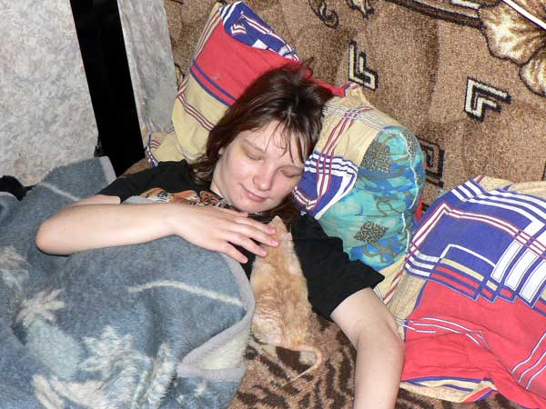
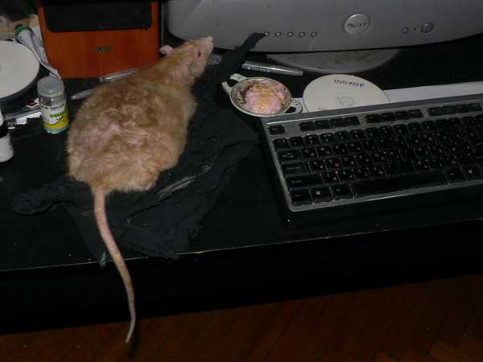
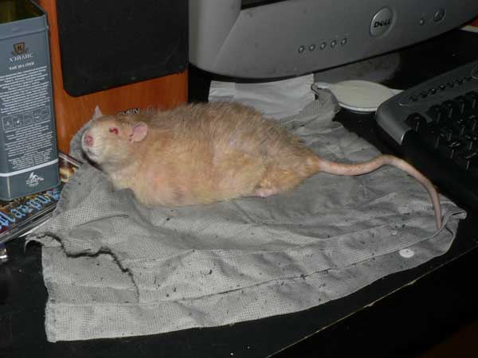
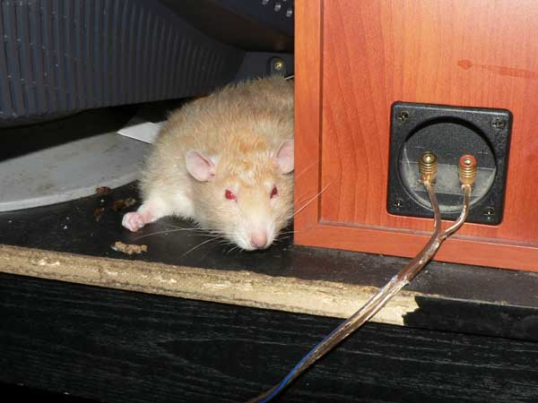
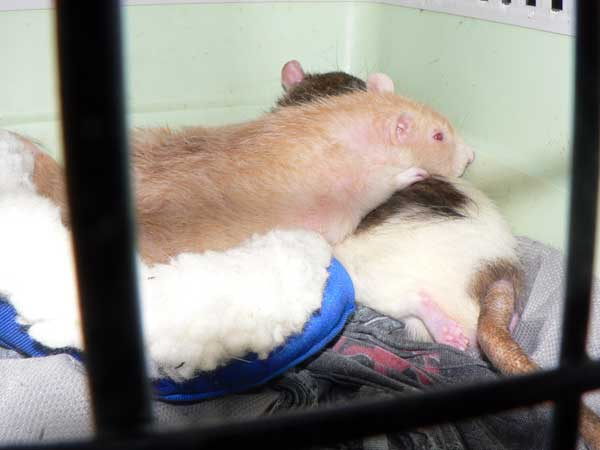
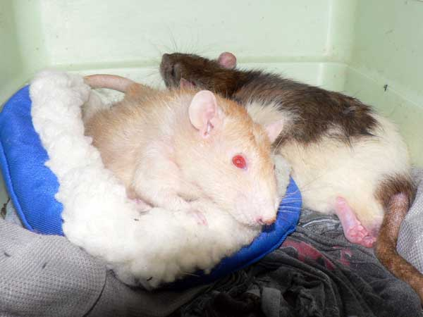

Июль 2009: Эрик
Эрик прожил долгую счастливую крысиную жизнь и ушел легко, во сне. Пережил много
других крыс, значительно более молодых. Был настоящим крысом, вожаком стаи.
Думаю, он прожил жизнь так, как хотел бы прожить любой крыс…


Эрик в пенсионной клетке. Задние ходилки уже не работают, поэтому вместо домика — картонная коробка, чтобы дверь была во всю стену. Эрику понравилось грызть потолок :-)

Старенькие крысы становятся очень ласковыми…

Эрик спит у компа.

А на этом фото — не спит, а помогает работать.

Эрик изображает страуса.

— Умываться завсегда полезно…

— А за ухом почесать?

— Вот ща ка-ак кулаком стукну!

— Воротит что-то. Обожрался…

— Хр-р-р…

А это — последние фото. Как только дона Румату принесли с операции, Эрик его сразу начал вылизывать, обнял — и так, пока не доехали до дома.

Это я открыл переноску — дон Румата еще не полностью отошео от наркоза, а Эрик повернулся — мол, смотри, что с благородным доном, позаботься… Хотя формально он уже не был доминантом и последние два месяца жил отдельно, все равно остался настоящим крысаком, заботящимся о своей стае.
12 апреля 2007 — 20 июля 2009